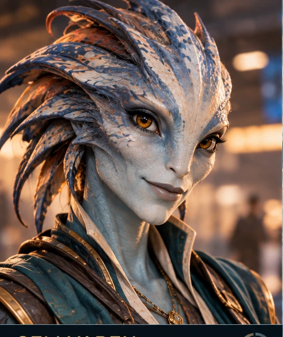
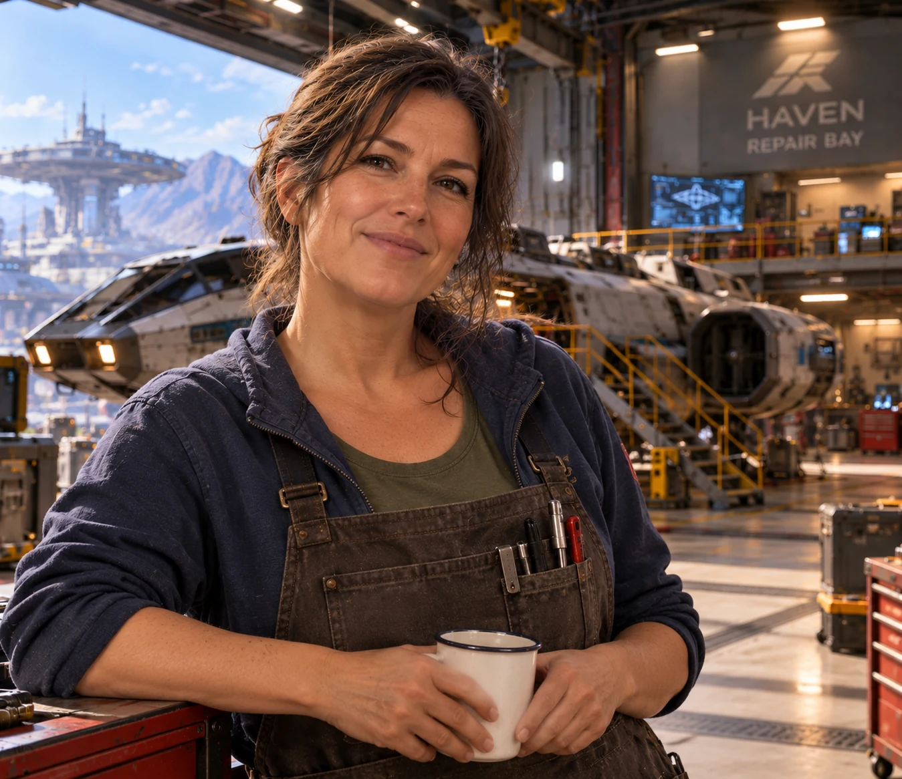
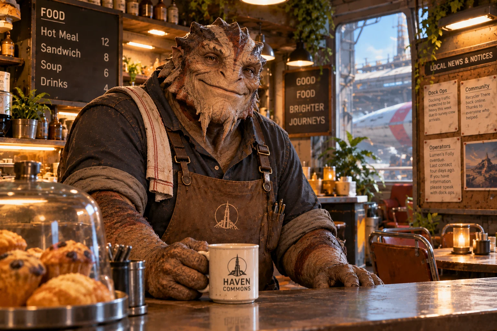

WAYFARERHaven Orbit
STATIONDock
Wayfarer display unavailable
The graphical scene could not be loaded. Your saved game state has not been changed.
The graphical scene could not be loaded. Your saved game state has not been changed.
WAYFARER / ENGINEERING
WAYFARER / COMMUNICATIONS
WAYFARER / OPERATIONS

MERIDIAN EXCHANGE / VEYLAN BROKER

HAVEN / SHIPWRIGHT

HAVEN COMMONS / KHAROK PROPRIETOR
HAVEN COMMONS / LOCAL LIFE
LOCAL FREIGHT MARKET
CALDER'S DRIFT / FIELD INVESTIGATION
THE LAST LANTERN / ROUTE TALK